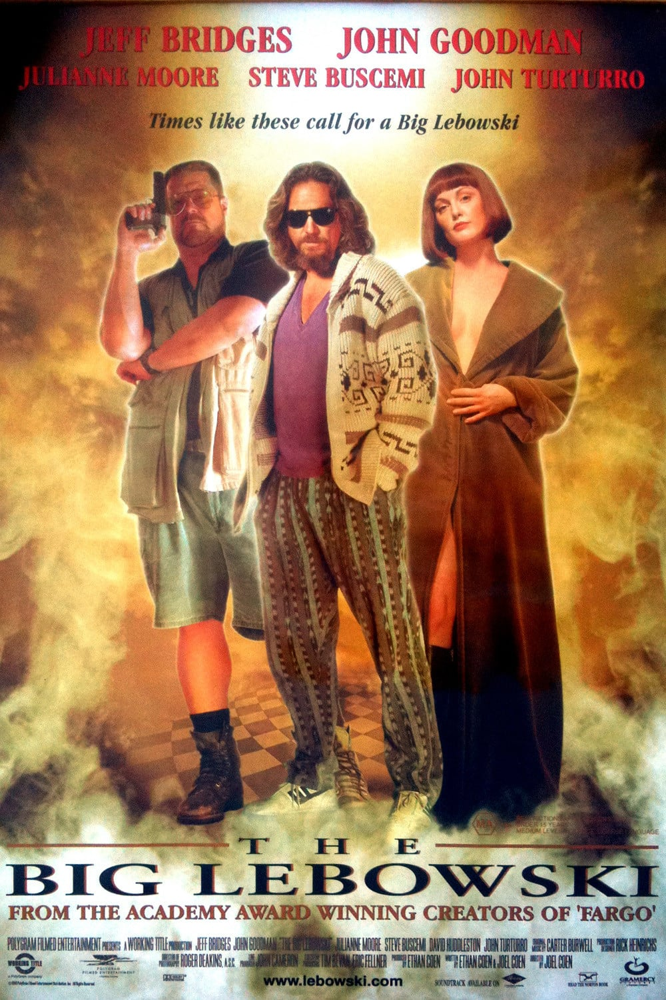
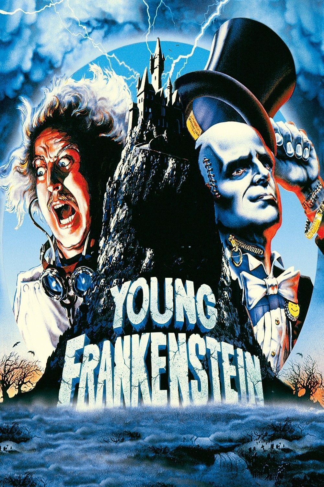
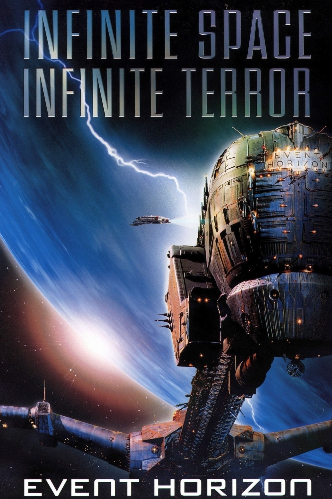

I just moved to Montreal in January, 2018. I am finishing up my Bachelors Degree in Game Programming and Development with a Minor in Applied Mathamatics. I am also a student at Le Wagon learning to program full stack web applications. I love movies, cooking, skateboarding and hockey.
Check me out|  |
The Big LebowskiJeff Bridges plays Jeff Lebowski who insists on being called "the Dude," a laid-back, easygoing burnout who happens to have the same name as a millionaire whose wife owes a lot of dangerous people a whole bunch of money -- resulting in the Dude having his rug soiled, sending him spiraling into the Los Angeles underworld. |
Young FrankensteinRespected medical lecturer Dr. Frederick Frankenstein (Gene Wilder) learns that he has inherited his infamous grandfather's estate in Transylvania. Arriving at the castle, Dr. Frankenstein soon begins to recreate his grandfather's experiments with the help of servants Igor (Marty Feldman), Inga (Teri Garr) and the fearsome Frau Blücher (Cloris Leachman). After he creates his own monster (Peter Boyle), new complications ensue with the arrival of the doctor's fiancée, Elizabeth (Madeline Kahn). |
 |
|  |
Event HorizonWhen the Event Horizon, a spacecraft that vanished years earlier, suddenly reappears, a team is dispatched to investigate the ship. Accompanied by the Event Horizon's creator, William Weir (Sam Neill), the crew of the Lewis and Clark, led by Capt. Miller (Laurence Fishburne), begins to explore the seemingly abandoned vessel. However, it soon becomes evident that something sinister resides in its corridors, and that the horrors that befell the Event Horizon's previous journey are still present. |
This page has been coded during the FullStack program @LeWagon.